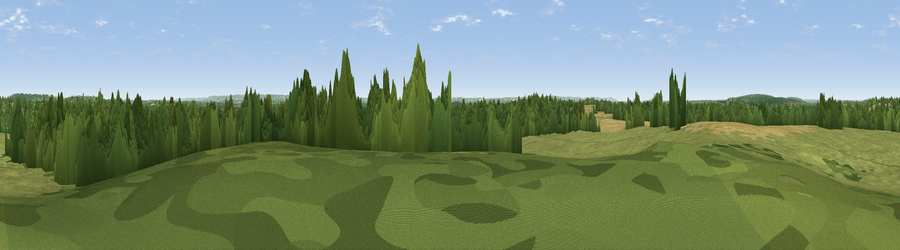

Windmill Hill
#25762 in England · top 35% of its area beats it · near Nuneham CourtenayWhere it is
The exact computed spot (SU 55261 98441). Click the marker for map links.
The view, rendered

A 360° render of this exact spot computed from the terrain model, tree cover and land cover — summer colours, afternoon light, calibrated against photographs of famous viewpoints. Real trees, hedges and buildings will differ in detail.
The panorama
Grey silhouette: terrain skyline in each direction (720 bearings, Earth curvature and refraction included). Dashed green: skyline with trees (+15 m) and buildings (+8 m) as obstacles. Blue strip: how far the ground is visible on each bearing.
Where the view opens
Wedge length = distance to the farthest visible ground on that bearing (vegetation-aware). Rings at 10, 25 and 50 km.
What fills the view
36% grassland · 32% woodland · 29% cropland · 3% built-up
Angular shares of the visible panorama (visual magnitude), not map area. Landscape diversity 0.52 (0–1 Shannon).
Key numbers
More beautiful places nearby
The staircase of upgrades: each row has a higher view potential than everything closer. Driving times are estimates from straight-line distance, calibrated against real road routing — check an actual route before setting out.
| Place | Direction | Drive | Score |
|---|---|---|---|
| Viewpoint near Garsington | NNE · 6 km | ~12 min | 54.2 |
| Round Hill | SSE · 6 km | ~13 min | 70.1 |
| Viewpoint near Watlington | ESE · 16 km | ~28 min | 70.6 |
| Viewpoint near Lewknor | E · 16 km | ~29 min | 70.8 |
| Viewpoint near Lewknor | E · 17 km | ~30 min | 74.4 |
| Viewpoint near Woolstone | WSW · 28 km | ~45 min | 76.7 |
| Martinsell viewpoint | SW · 51 km | ~72 min | 77.3 |
| Broadway Hill | NW · 58 km | ~80 min | 77.7 |
51.68202, -1.20211 · source: dobih hill · position refined by local search. Computed location — check access rights before visiting.